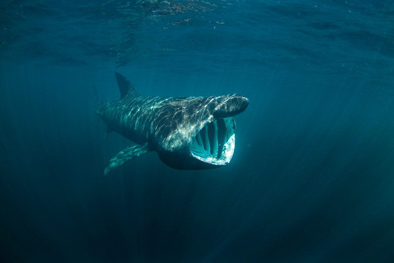
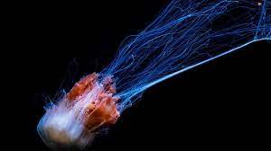

EL TOP 8 ES EL SIGUIENTE :
Tiburón peregrino

El tiburón peregrino (Cetorhinus maximus) ocupa el segundo lugar en tamaño entre los peces, tras el tiburón ballena. El puesto que ocupa es merecidísimo,
ya que un ejemplar de esta especie suele alcanzar una media de 10 metros de longitud y un peso corporal de casi cuatro toneladas. Una de las características
de este animal marino es que acostumbra a nadar con la boca abierta, la cual llega a medir un metro de diámetro, filtrando el agua y alimentándose de plancton.
Su hábitat es muy extenso, ya que se le
puede encontrar en las zonas costeras de cualquier lugar del mundo, desde las áreas polares hasta océanos tropicales.
HABITAT
El peregrino es un tiburón pelágico que suele visitar con frecuencia zonas costeras, pudiendo ser hallado a lo largo de todo
el mundo, desde las áreas polares hasta océanos tropicales, principalmente en las superficies de las plataformas continentales,
si bien prefiere aguas frías, habitualmente entre los 8 y los 14 °C
. Suele ser avistado en zonas próximas a las costas y es habitual que penetren en bahías y puertos.
DIETA
La alimentación del tiburón peregrino se basa en la ingesta de cualquier animal o mejor dicho material orgánico que se le cruce por su camino.
No es carnívoro sino que se le considera como una especie de ser vivo planctívoro.
Esto es debido a que es un animal que siempre va con la boca abierta y todo lo que se meta en su interior será comida para el expulsando por
las branquias lo restante o que no necesite ingerir teniendo como alimentos infinidad de peces pequeños,
calamares y crustáceos, y por supuesto cantidad abundante de krill.
Medusa melena de león ártica

En este puesto me gustaria poner un animal muy caracteristico en cuanto su longuitud ....La medusa melena de león ártica (Cyanea capillata), también recibe el apellido de gigante por ser la especie de cnidario escifozoo más grande conocida.
El ejemplar más largo conocido de esta especie data de 1870 y fue encontrado en las costas de Massachusetts, donde fue registrado con una umbrela de 2.3
metros de diámetro y unos tentáculos que alcanzaban los 36.5 metros de longitud. Estas medidas la
hacen merecedora del primer puesto en el ranking de los animales más largos del planeta, superando incluso a la ballena azul.
HABITAT
El hábitat natural de la medusa melena de león se encuentra en las aguas abiertas y profundas de la región Ártica, aunque también han sido encontradas en
el océano Atlántico y Pacífico. Las que habitan en el Norte suelen tener un tamaño mucho mayor que las localizadas más al sur.
Estas medusas habitan en una zona conocida como abisal o abisopelágica. Se trata de un nivel del espacio oceánico ubicado entre 3.000 y
6.000 metros de profundidad. La medusa melena de león nada libremente y se alimenta en este ambiente caracterizado por la frialdad, la escases de nutrientes y la ausencia total de luz solar.
Aunque cuando está llegando el ocaso de su vida prefieren acercarse a aguas menos profundas.
DIETA
La medusa melena de león es un animal cazador que busca de forma activa a sus presas. Este cnidario basa su alimentación principalmente en peces,
a los que captura con sus tentáculos y aturde inoculando una sustancia tóxica a través de los nematocistos.
También puede llegar a consumir otras medusas de menor tamaño, zooplancton y ctenóforos o medusas de peine